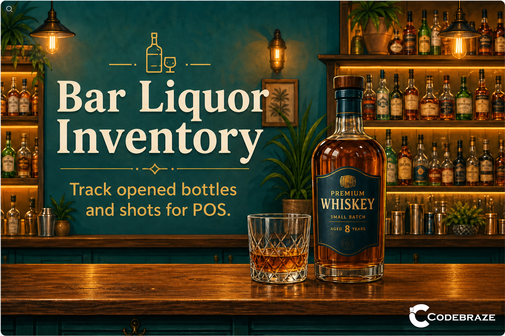
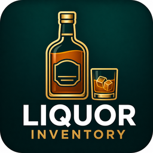
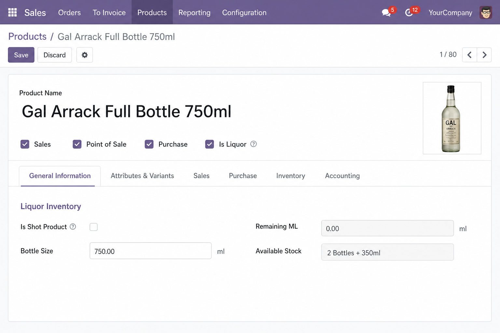

Built for bars and restaurants that sell liquor by the bottle and by the shot. Mark liquor products once, track sealed stock plus the active opened bottle balance in millilitres (ml), and let POS automatically open bottles and deduct consumption when shot products are sold.

Enable Is Liquor, set bottle size, and configure shot products with consumption in ml.
Tick Is Liquor on the product form. Liquor settings appear only for liquor products — other items stay clean.
Set bottle size (e.g. 750 ml), view sealed stock, remaining ml on the active opened bottle, and a combined display such as 2 Bottles + 350ml.
Every opened bottle is recorded under Inventory → Opened Liquor Bottles with size, remaining ml, state, and linked POS order.
Create shot products (e.g. 100 ml, 200 ml) linked to a parent full bottle. Define consumption ml per unit — ideal for arrack, whisky, vodka, and spirits.
When a shot line is paid in POS, the module opens a sealed bottle if needed and deducts the correct ml. Stock moves are created automatically.
Liquor settings on the product template apply to all variants, so every size or attribute variant is handled consistently in POS.
Enables liquor tracking fields on the product.
Full bottle capacity in millilitres.
Marks a saleable shot / pour product.
Links shot to bottle and sets ml per unit.
Includes demo products for a typical bar setup: full, half, and quarter bottles plus 100 ml and 200 ml shot products linked to the parent bottle — ready for testing in POS.
Requires Point of Sale and Stock Accounting. Compatible with Odoo Community and Odoo Enterprise.
For support requests: sales@codebraze.com
Built for Odoo 19 · License LGPL-3 · Author CodeBraze